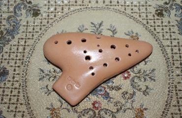

Maparam Ocarinas are overhyped

Welcome to Your Student Resource Page! First, I’d like to thank you for purchasing the Hal Leonard Ocarina Method book. I spent a…

Welcome to Your Student Resource Page! First, I’d like to thank you for purchasing the Hal Leonard Ocarina Method book. I spent a…

test1234 this si testing for a photo - to see how it looks.
here is some text. this text is text for the purpose of doing what text does.
you should pick a good one.